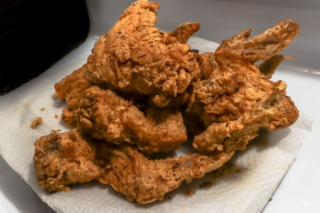

Home
Fried Chicken

Description
Crispy, golden-brown fried chicken with a flavorful, seasoned crust and juicy, tender meat inside.
Ingredients
- 1 kg chicken pieces (thighs, drumsticks, or wings)
- 2 cups buttermilk
- 2 cups all-purpose flour
- 1 tsp salt
- 1 tsp black pepper
- 1 tsp paprika
- 1 tsp garlic powder
- 1 tsp onion powder
- ½ tsp cayenne pepper (optional)
- 2 eggs
- Vegetable oil, for frying
Steps
- Place the chicken pieces in a bowl and season lightly with salt and pepper.
- Pour the buttermilk over the chicken, cover, and marinate in the refrigerator for at least 2 hours.
- In a separate bowl, combine the flour, salt, pepper, paprika, garlic powder, onion powder, and cayenne pepper.
- Beat the eggs in another bowl.
- Remove a piece of chicken from the buttermilk and dip it into the beaten egg.
- Coat the chicken thoroughly in the seasoned flour, pressing the flour onto the surface to create a crispy crust.
- Repeat the egg and flour coating for the remaining chicken pieces.
- Heat vegetable oil in a deep, heavy-bottomed pan to about 175°C (350°F).
- Carefully fry the chicken in batches for about 10–15 minutes, turning occasionally, until golden brown and cooked through. The thickest part should reach 74°C (165°F) internally.
- Transfer the fried chicken to a wire rack or paper towels to drain excess oil, then let it rest for a few minutes before serving.